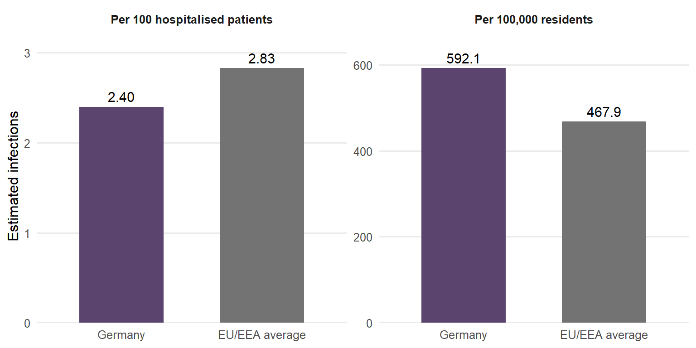

Does a lower infection rate tell the whole story?
If a country reports fewer infections among hospital patients, you might expect it to have a smaller infection problem overall. A study of Germany shows why that conclusion can be misleading.
Healthcare-associated infections are infections acquired while receiving healthcare. Examples include pneumonia, surgical wound infections and urinary tract infections. They can cause additional illness, longer hospital stays and, in some cases, death.
Using European hospital survey data collected in 2011–2012, researchers estimated that Germany had fewer infections per 100 hospitalised patients than the European Union and European Economic Area average. Yet Germany had more infections per 100,000 residents.
How can both findings be true? The key is who gets counted. The infection rate among hospital patients describes one group; the rate across the whole population also reflects how many people receive hospital care.
For readers interested in hospital safety, this distinction matters: a favourable hospital-level rate alone does not tell us the full scale of the problem.
A different denominator changes the story
The study estimated 2.40 infections per 100 hospitalised patients in Germany, compared with 2.83 across the EU/EEA. Looking only at these figures, Germany appears to have a lower infection rate.
But the population-level comparison reverses the picture: Germany had an estimated 592.1 infections per 100,000 residents, compared with 467.9 across the EU/EEA—about 27% higher.
Figure 1 shows both comparisons. Each panel uses its own scale because the two measures have different denominators.
The authors linked this contrast to Germany’s high volume of hospital care. A lower infection rate among patients can still produce a substantial population burden when many people are admitted. This does not establish that hospital use alone caused the difference, or that any individual German hospital was less safe.
What does this mean for the population?
The difference matters because these infections can have serious consequences. For the five infection types studied, the researchers estimated approximately 478,000 infections and 16,000 deaths attributable to those infections annually in Germany.
Table 1 puts that estimated national burden into perspective. These are modelled estimates, rather than directly counted annual totals.
| Outcome | Central estimate | 95% uncertainty interval |
|---|---|---|
| Annual infections | 478,222 | 421,350–537,787 |
| Annual deaths attributable to these infections | 16,245 | 10,863–22,756 |
The uncertainty intervals show that the exact totals are uncertain. Even so, the estimates highlight why a lower infection rate among hospital patients should not be taken as evidence of a small national problem.
Where do these estimates come from?
Zacher et al. (2019) used a European hospital survey conducted in 2011–2012. Germany’s survey took place in 2011, and its representative sample included 9,626 patients from 46 hospitals.
The survey recorded infections present at the time patients were assessed. The researchers then used information about hospital stays, infection duration and hospital admissions to estimate annual infections and their consequences. This explains why the figures are estimates rather than directly observed annual totals.
What these numbers cannot tell us
The study covers five common infection types, so its estimates do not include every healthcare-associated infection.
These results describe historical data, not Germany’s current infection burden. The estimates also depend on modelling assumptions and how well the surveyed hospitals represent the wider hospital population.
For readers, the important qualification is simple: this study helps explain how infection statistics can tell different stories, but it cannot tell you how safe a particular hospital is today.
Look beyond a single infection rate
Can a lower hospital infection rate hide a bigger national problem? In this study, Germany’s lower estimated rate among hospital patients coexisted with a higher rate across the population.
The lesson is to look beyond one favourable number. When reading an infection statistic, ask who is being counted, when the data were collected and what consequences the infections have.
Hospital-level rates and population-level burden answer different questions. Considering both gives a fuller picture of the problem.
Reference
Zacher, B., Haller, S., Willrich, N., et al. (2019). Application of a new methodology and R package reveals a high burden of healthcare-associated infections (HAI) in Germany compared to the average in the European Union/European Economic Area, 2011 to 2012. Eurosurveillance, 24(46), 1900135. https://doi.org/10.2807/1560-7917.ES.2019.24.46.1900135